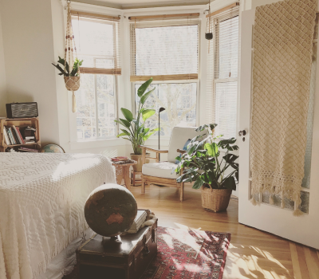

從風格帶入生活

簡約風格
近幾年興起極簡主義，想挑戰過度消費的文化，讓家變得更簡潔整齊，或者是想要節省開銷。鄉村風格
搭配粉嫩色系的牆面以及碎花印染布和壁紙設計， 讓英式鄉村風散發如田園小品般的自然柔和氛圍。

簡約風格
近幾年興起極簡主義，想挑戰過度消費的文化，讓家變得更簡潔整齊，或者是想要節省開銷。鄉村風格
搭配粉嫩色系的牆面以及碎花印染布和壁紙設計， 讓英式鄉村風散發如田園小品般的自然柔和氛圍。

鄉村風格
搭配粉嫩色系的牆面以及碎花印染布和壁紙設計， 讓英式鄉村風散發如田園小品般的自然柔和氛圍。